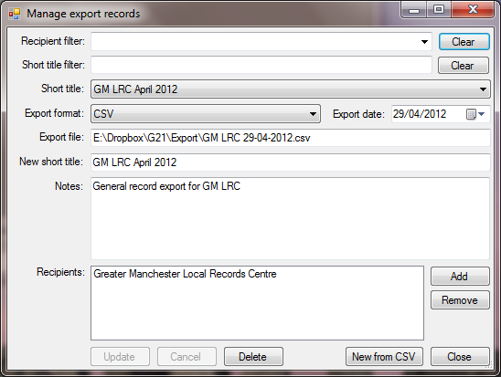

Gilbert 21 - the manage exports dialog
From the Exports menu item of the Tools menu, select the Manage export history sub-item to invoke the Manage export records dialog.

Use this dialog to inspect the metadata associated with any export that you have performed. You can also use the dialog to modify the metadata associated with any particular export record. Note that there are no restrictions on what you can change here - you can modify things like the export date and the export format. It goes without saying that you should not do so unless you have very good reasons for so doing.
The short titles of all the export records are listed in the Short title drop-down list. At the top of the dialog are two input fields where you can specify filters to limit what appears in this drop-down list. If you type a string into the Short title filter textbox, then only exports with short titles that include the string you type will be listed. The Recipient filter drop-down list shows all recipients for which exports have been made. By select a particular recipient from this list, the list of exports in the Short title drop-down list will be restricted to those received by the specified recipient. The Clear buttons adjacent to each of these filters are a convenient method of clearing the filters.
You can view/change the export date with the Export date control, the export file path with the Export file textbox, the short title with the New short title textbox, the export notes with the Notes textbox and the recipients of the export with the Recipients list. To add a recipient to the list, you must click the Add button which will invoke the Export recipients dialog. You can use that dialog to select recipients that you have already created records for, or set up a new recipient and select that. To remove a recipient from the list of recipients for an export, just select it in the list and then click the Remove button.
If you have made changes to the metadata for an export record, the Update and Cancel buttons are enabled and you cannot change the selected export until you have either committed the changes by clicking the Update button, or cancelled them by clicking the Cancel button.
To delete an export record entirely, select the export in the Short title drop-down list and then click the Delete button.
The New from CSV button, is a utility button that will enable you to create a new export record from a CSV file that contains - in the first column - a list of Gilbert 21 record IDs. It's most useful if you have old export files that include the RecID field and which were made before the introduction of this new functionality, and you wish to retrospectively create an export record for them. If you have such a file, make sure the Gilbert 21 record IDs are in the first column and then click this button and select the file. The record IDs will be read in and associated with a new export record. You can then specify the metadata associated with the export.
Created with the Personal Edition of HelpNDoc: Easy to use tool to create HTML Help files and Help web sites